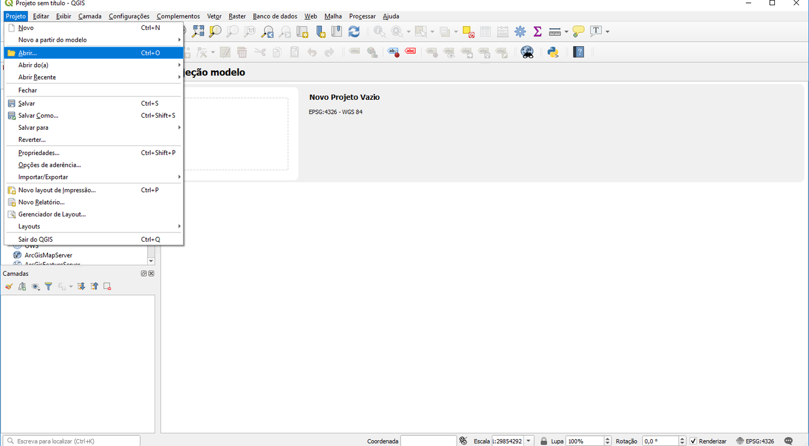
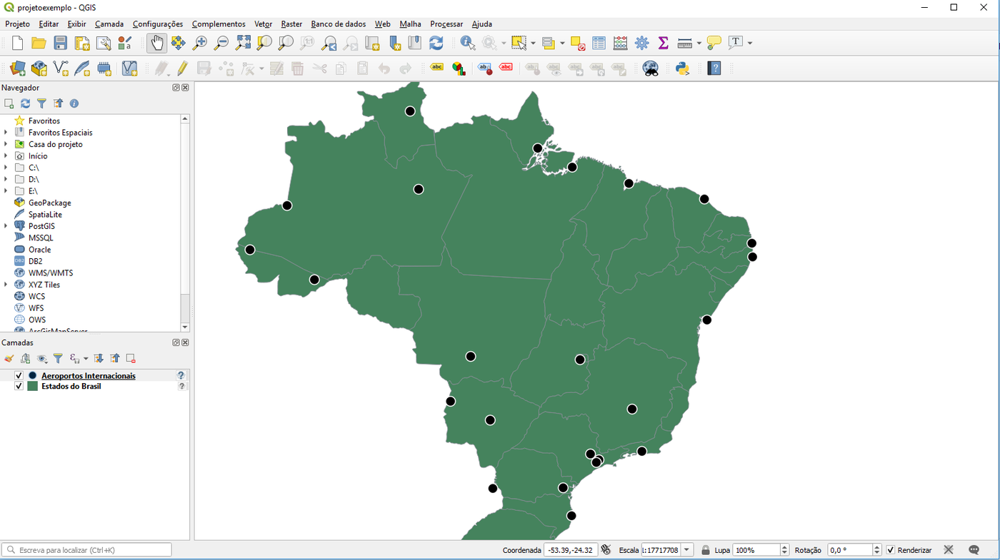

Instalando PostgreSQL, PostGIS e QGIS¶
Para conhecer um SGBD, é preciso instalá-lo e explorar seus recursos. Neste capítulo, instalaremos os três programas usados em toda a Parte 2:
| Programa | Papel | Onde obter |
|---|---|---|
| PostgreSQL | Servidor de banco de dados objeto-relacional | postgresql.org/download |
| PostGIS | Extensão espacial do PostgreSQL | Instalada junto ao PostgreSQL (ver abaixo) |
| pgAdmin 4 | Cliente gráfico para administrar o servidor e consultar os dados | Incluído no instalador do PostgreSQL para Windows e macOS |
| QGIS | Sistema de informação geográfica (cliente) | qgis.org/download |
🐘 O PostgreSQL¶
O PostgreSQL é um sistema gerenciador de banco de dados objeto-relacional, que funciona em arquitetura cliente/servidor. Ele surgiu do projeto POSTGRES, iniciado em 1986 na Universidade da Califórnia em Berkeley, e passou por várias evoluções até receber o nome atual, em 1996, quando se tornou um projeto de código aberto coordenado pelo PostgreSQL Global Development Group (histórico oficial). É hoje considerado o SGBD de código aberto mais avançado. Ele é formado por uma coleção de programas: o servidor e diversos utilitários, como o psql (cliente de linha de comando).
O PostGIS é a extensão que acrescenta ao PostgreSQL os tipos de dados, as funções e os índices espaciais que estudaremos nos Capítulos 14 e 15.
Versões
Use uma versão do PostgreSQL com suporte ativo (a partir da 15) e o PostGIS 3.x. Os exemplos deste livro foram testados com PostgreSQL 16 e PostGIS 3.4, mas funcionam em versões mais novas. Versões antigas de materiais anteriores (PostgreSQL 9.5, pgAdmin 3) estão descontinuadas e não devem mais ser usadas.
Escolha, a seguir, o roteiro do seu sistema operacional.
- Baixe o instalador da EDB em enterprisedb.com/downloads/postgres-postgresql-downloads, escolhendo a versão mais recente para Windows x86-64.
- Execute o instalador. Nas telas iniciais, mantenha os diretórios sugeridos para o programa e para os dados, e mantenha selecionados os componentes PostgreSQL Server, pgAdmin 4, Stack Builder e Command Line Tools.
- Defina a senha do superusuário
postgres. Em ambientes institucionais, use uma senha forte; para uso pessoal, uma senha simples, que você não esqueça. - Mantenha a porta 5432, a porta padrão do PostgreSQL. Em um mesmo computador podem existir vários servidores; a porta é o número que indica com qual servidor o cliente quer se comunicar.
- Mantenha a localidade padrão e conclua a instalação.
- Na tela final, deixe marcada a opção de iniciar o Stack Builder. Nele, selecione o servidor recém-instalado e, na categoria Spatial Extensions, marque o PostGIS correspondente à sua versão do PostgreSQL. Avance até concluir, aceitando as opções padrão.
Ao final, estarão instalados o PostgreSQL, o pgAdmin 4 e o PostGIS — incluindo o PostGIS Shapefile Import/Export Manager (shp2pgsql-gui), útil para importar shapefiles.
Os pacotes das distribuições já incluem o PostGIS:
O servidor é iniciado automaticamente. Para definir uma senha para o superusuário postgres:
O pgAdmin 4 pode ser instalado a partir do repositório oficial; como alternativa, o próprio QGIS e o cliente psql bastam para os exercícios.
A forma mais simples é o Postgres.app, que já inclui o PostGIS: baixe, arraste para a pasta Aplicativos, abra e clique em Initialize. O pgAdmin 4 pode ser baixado em pgadmin.org.
Com o Docker instalado, um único comando sobe um servidor PostgreSQL com PostGIS:
docker run --name postgis \
-e POSTGRES_PASSWORD=postgres \
-p 5432:5432 \
-v pgdata:/var/lib/postgresql/data \
-d postgis/postgis:16-3.4
A imagem usa as mesmas versões em que os exemplos foram testados (PostgreSQL 16 e PostGIS 3.4); versões mais novas, como postgis/postgis:17-3.5, também funcionam. O volume pgdata preserva os dados quando o contêiner é removido. Acesse com qualquer cliente em localhost:5432, usuário postgres, senha postgres. Veja o tutorial de Docker da Coleção LambdaGeo para mais detalhes.
✅ Testando a instalação¶
Vamos criar um banco de dados para os exemplos do livro e ativar nele o PostGIS.
1. Conecte-se ao servidor. Abra o pgAdmin 4. No painel Object Explorer, expanda Servers: o servidor local aparece com o nome da versão instalada (no Docker ou no Linux, registre-o com Register → Server..., informando localhost, porta 5432, usuário postgres e a senha). Digite a senha definida na instalação.
2. Crie um banco de dados. Clique com o botão direito em Databases → Create → Database..., dê o nome curso e salve. Ou, no psql:
3. Ative o PostGIS. A extensão precisa ser criada em cada banco em que será usada. Selecione o banco curso, abra o Query Tool (menu Tools) e execute:
4. Verifique. Ainda no Query Tool:
O resultado deve mostrar a versão do PostGIS e das bibliotecas que ele usa — entre elas o GEOS (operações geométricas) e o PROJ (transformações entre sistemas de referência). O GDAL (formatos matriciais) só aparece se a extensão postgis_raster também for criada. Se aparecer a mensagem function postgis_full_version() does not exist, a extensão não foi criada no banco correto.
O psql, cliente de linha de comando
Todos os comandos SQL deste livro também podem ser executados no psql. Para conectar ao banco curso:
Comandos úteis dentro do psql: \dt lista as tabelas, \d nome_tabela descreve uma tabela e \q sai.
🌎 O QGIS¶
O QGIS é um SIG livre e de código aberto, mantido pela fundação OSGeo, disponível para Windows, Linux e macOS. Ele será o nosso cliente geográfico: com ele, visualizaremos e editaremos os dados guardados no PostgreSQL/PostGIS.
Qual versão instalar?
O QGIS tem duas linhas de versões: a LTR (Long Term Release), mais estável, atualizada por um ano, e a versão mais recente, com novidades a cada quatro meses. Para uso em aula, prefira a LTR. As telas deste livro foram capturadas em versões 3.x. A partir de 2026 a linha LTR passa para a série 4 (QGIS 4.2), com nova interface baseada em Qt6: a disposição de alguns menus pode mudar, mas as funções usadas aqui são as mesmas.
- Acesse qgis.org/download e baixe o instalador da versão LTR para o seu sistema.
- Execute o instalador, aceite a licença e mantenha a pasta de instalação padrão.
- Não é necessário instalar os conjuntos de dados de exemplo.
Os repositórios oficiais do QGIS oferecem versões mais atuais que as das distribuições. Siga as instruções em qgis.org/resources/installation-guide ou, para uma instalação rápida, use o pacote da distribuição:
Testando o QGIS¶
Baixe os dados de exemplo, dadosbdgeo.zip, e descompacte-os em uma pasta. Abra o QGIS e, no menu Projeto → Abrir..., selecione o arquivo dadosbdgeo/projetoexemplo.qgz. Os mesmos dados serão usados no Capítulo 16 e no trabalho prático do Capítulo 17.

Você deverá ver o limite político do Brasil com os aeroportos internacionais:

Pronto: o ambiente está instalado. No próximo capítulo, usaremos o banco curso para aprender SQL; no Capítulo 16, conectaremos o QGIS a ele.
✏️ Exercícios¶
- Qual a função da porta 5432? O que aconteceria se dois servidores PostgreSQL tentassem usar a mesma porta no mesmo computador?
- Por que o comando
CREATE EXTENSION postgis;precisa ser executado em cada banco de dados? - No pgAdmin, crie um segundo banco de dados chamado
brdatae ative nele o PostGIS. Ele será usado no trabalho prático. - Execute
SELECT postgis_full_version();e identifique as versões do PostGIS, do GEOS e do PROJ instaladas.